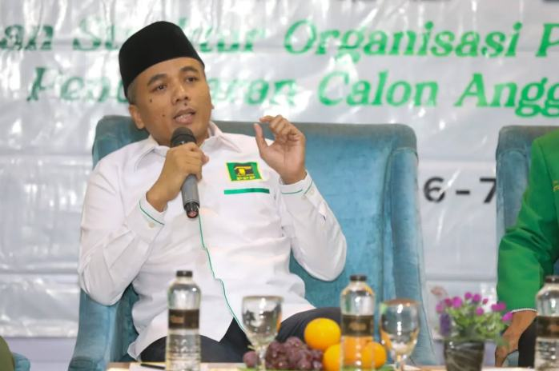

P3Muda · Foto: SINDOnews
POLITIK & KEBANGSAAN · 06 NOVEMBER 2026
Sumber: SINDOnews
P3Muda Tegas Menjaga NKRI, Dukung Langkah Konstitusional Presiden
P3Muda dukung langkah konstitusional Presiden.
Baca ArtikelBerakar pada Nilai, Bergerak untuk Rakyat.

IDENTITAS TETAP, NARASI DIPERLUAS
Berakar pada Nilai, Bergerak untuk Rakyat.
Ruang informasi dan dialog publik yang menghadirkan gagasan, aspirasi masyarakat, serta berbagai inisiatif untuk masa depan bersama.

RUANG KOMUNIKASI PUBLIK
Aspirasi Didengar, Informasi Terbuka, Aksi Terasa.
Mengenal rancangan ruang komunikasi yang lebih terbuka untuk menampung gagasan, kritik, serta aspirasi masyarakat.

DARI KEPEDULIAN MENJADI GAGASAN
Bersama membangun ruang kepedulian.
Jelajahi rancangan program di bidang pendidikan, lingkungan, dan kemanusiaan dalam prototipe akademik ini.
KABAR PPP
Ikuti perkembangan terbaru Partai Persatuan Pembangunan melalui pemberitaan aktual dari berbagai sumber media terpercaya.
P3Muda · Foto: SINDOnews
POLITIK & KEBANGSAAN · 06 NOVEMBER 2026
Sumber: SINDOnews
P3Muda dukung langkah konstitusional Presiden.
Baca Artikel
Kantor DPP PPP, Jakarta · Foto: SINDOnews
ORGANISASI & POLITIK · 29 OKTOBER 2026
Sumber: SINDOnews
Konsolidasi internal PPP jelang Pemilu 2029.
Baca Artikel
Pelatihan IT PPP · Foto: SINDOnews
TRANSFORMASI DIGITAL · 29 OKTOBER 2026
Sumber: SINDOnews
Pelatihan daring bagi admin IT dari 38 DPW.
Baca ArtikelPROGRAM & AKSI
Temukan arah perjuangan dan rancangan program dalam mendukung pendidikan, pemberdayaan masyarakat, dan kesejahteraan rakyat.

LINGKUNGAN · SOSIAL DAN KEMANUSIAAN
Merawat lingkungan dan memperkuat kepedulian sosial melalui pembelajaran warga, kebun komunitas, dan kesiapsiagaan bersama.
Lihat rancangan program
PENDIDIKAN
Usulan dukungan belajar yang memadukan bantuan pendidikan, pendampingan, dan akses informasi bagi pemuda.
Lihat rancangan programASPIRASI RAKYAT
Setiap aspirasi menjadi bagian penting dalam membangun komunikasi yang terbuka. Sampaikan gagasan, kritik, dan masukan untuk mendorong perubahan yang lebih baik.
Diterima → Diproses → Ditindaklanjuti
Simulasi akademik. Formulir tidak mengirim pesan kepada PPP.
PERNYATAAN RESMI
Temukan informasi dan rujukan terkait organisasi melalui pernyataan yang dapat ditelusuri sumbernya.
Lihat semua informasi2 NOVEMBER 2026 · INFORMASI ORGANISASI
Informasi mengenai penataan dan konsolidasi organisasi PPP.
Lihat arsip informasiINFORMASI ORGANISASI · RUJUKAN MEDIA
Informasi mengenai persatuan dan dinamika internal organisasi.
Lihat arsip informasi